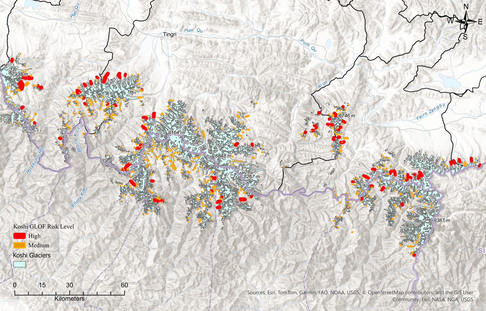
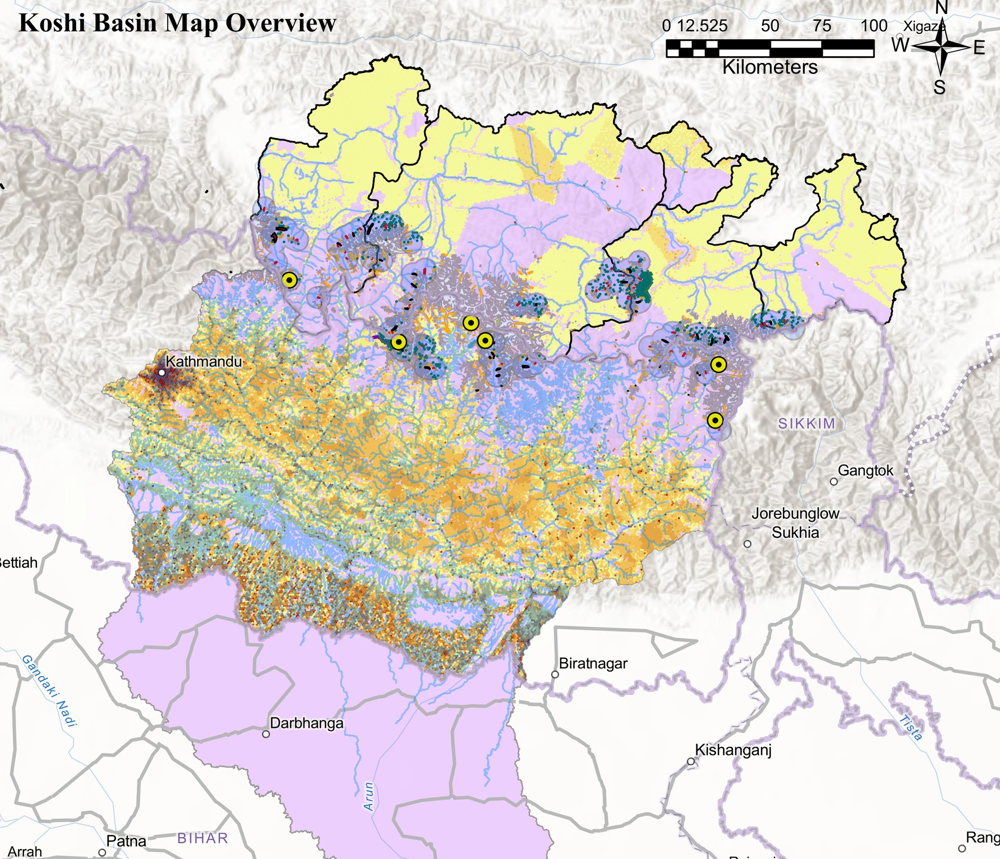
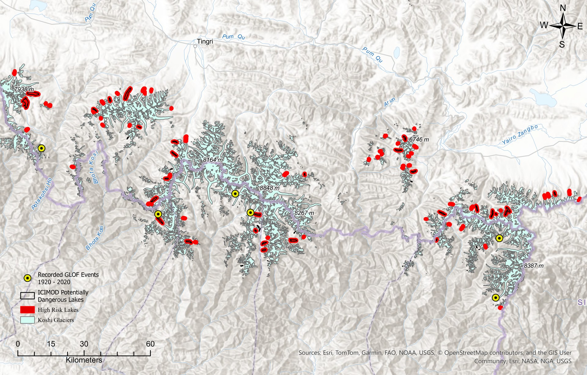
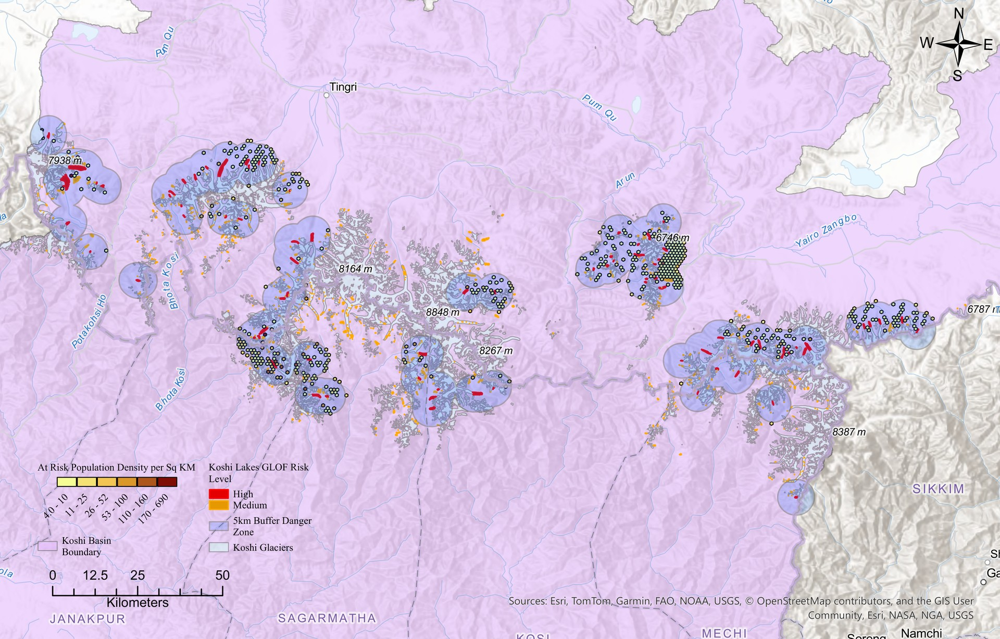
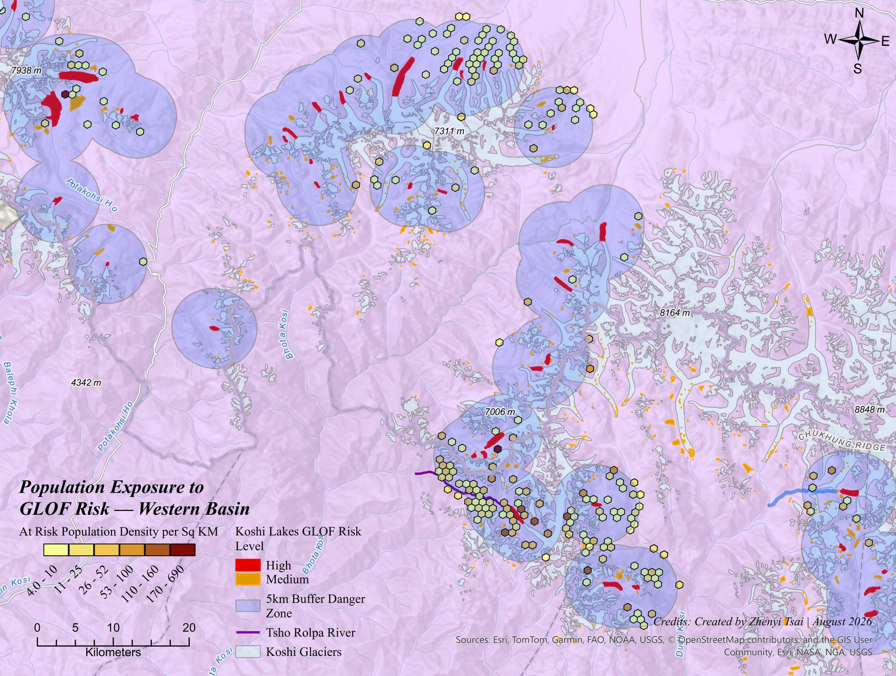
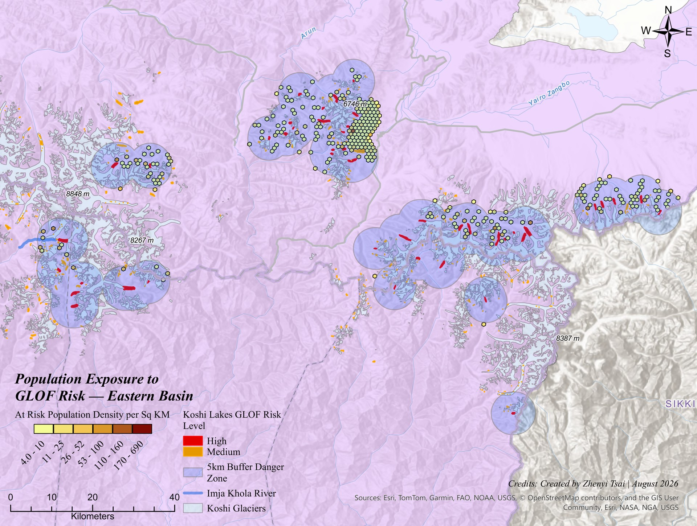
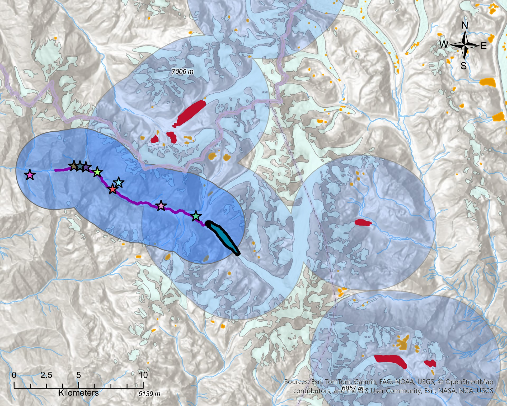
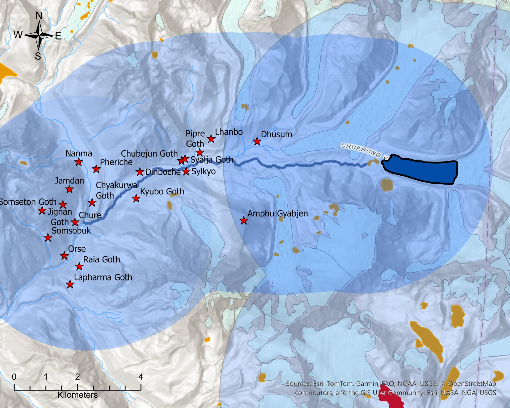

Glacial lake outburst flood screening, Nepal's Koshi Basin
A screening model for glacial lake outburst floods across Nepal's Koshi Basin — narrowing two thousand lakes down to the settlements, and the people, who would be standing downstream.

A glacial lake outburst flood begins where ice, meltwater, and a fragile natural dam meet. Across the Koshi Basin, roughly two thousand lakes sit in that arrangement — and only a handful will ever fail. The problem is not a shortage of lakes to worry about; it is knowing which ones, and who sits below them.
This project builds a lightweight, repeatable way to triage that question. Rather than model every lake in exhaustive detail, it scores all of them on the three variables that most reliably separate the dangerous from the benign, then carries the survivors through validation, proximity exposure, and downstream flood-path analysis — the same path a hazard analyst would walk, made legible on a map.
Establishing the ground

Does the model hold up?
A screening model is only as trustworthy as its agreement with slower, field-based work. Validated against ICIMOD's authoritative inventory of 42 potentially dangerous glacial lakes, the three-factor model recovered 29 of them — including the two Rank-I benchmarks, Imja and Tsho Rolpa. For a method this lightweight, a 69% catch is a strong result, and the disagreements are useful in their own right: they mark exactly where rapid screening and detailed assessment diverge.

Who is exposed
Risk is only meaningful once people enter the frame. Drawing a 5 km danger zone around the 79 high-risk lakes captures roughly 10,808 residents — a deliberately conservative baseline, since outburst floods travel far beyond five kilometres down-valley. Exposure concentrates in the thin, high-mountain valleys threaded between the glaciers.



The sharpest test
Proximity is a blunt instrument; a flood follows the valley, not a circle. Tracing the actual flow paths of the two marquee lakes turns the abstraction concrete — and reveals how much the downstream geography matters. Tsho Rolpa's corridor down the Rolwaling Khola threatens 9 settlements and about 1,134 residents. Imja's corridor crosses more villages — 20 — yet only ~224 modelled residents, because the upper Khumbu is sparsely and seasonally peopled.
Two Rank-I lakes, comparable hazards, and an order-of-magnitude gap in human consequence. That contrast is the argument for doing flow-path analysis at all.


Selected academic writing
Three research papers on environmental policy and impact assessment. Each opens as a PDF in a new tab.
Weighing a proposed Salish Sea container terminal against salmon habitat, Southern Resident Killer Whale recovery, and Douglas Treaty fishing rights.
Tracking China's Nationally Determined Contributions against the Paris Agreement — and the just-transition and housing gaps that remain.
A case for decentralizing Canada's power grid and building out region-matched renewable generation, research, and manufacturing.
A geographer whose work moves between the map and the field, usually somewhere high and cold.
Zhenyi Tsai studies how a warming climate reshapes mountain water — and who bears the consequences downstream. The through-line is a habit of pairing spatial analysis with time actually spent on the ground: surveying glacial lakes on the Tibetan Plateau one season, then turning that fieldwork into the kind of GIS models that let an agency decide where to look first.
That fieldwork has been unusually hands-on. With Tsinghua University's Institute of Climate Change & Sustainable Development, Zhenyi surveyed glacial lakes in Shannan Prefecture, assessing outburst-flood risk and tracing how climate-driven shifts in flow and sediment ripple through the basins that supply much of Asia's water — and working alongside Tibetan communities to fold local ecological knowledge into the analysis.
The following year brought a different kind of problem. As an agroecology coordinator for the Qilian County government in Qinghai, Zhenyi helped five Tibetan families move from nomadic pastoralism to settled agriculture — rebuilding thin highland soil into workable loam, designing drip irrigation for a water-scarce valley, and standing up the region's first biogas digester to turn organic waste into household fuel. Between the two sits a consistent interest in the practical, unglamorous work of adaptation.
Back in Vancouver, that shows up as teaching and organizing: building climate-justice curriculum as a UBC teaching assistant, translating climate-wellbeing research into classroom tools, and — separately — certifying the next set of first responders as a Red Cross first-aid instructor. Two degrees underpin it, a BA in Geography & Environmental Science from UBC and earlier study in Political Science & Environmental Studies at the University of Toronto.
Head coach of UBC Muay Thai and past president of the UBC Buddhist Student Association — the discipline-and-stillness end of an otherwise field-heavy life.
Certified Emergency Medical Responder and Wilderness First Responder — useful credentials when your study sites are days from a road.
Works in English and Mandarin, which is what made the Qinghai and Tibet fieldwork possible in the first place.
BA, Geography & Environmental Science (Double Major) · Vancouver, B.C.
Political Science & Environmental Studies · Toronto, Ontario
Qilian County Government, Agricultural Department · Qinghai, China
Tsinghua University, Inst. of Climate Change & Sustainable Development · Shannan Prefecture, T.A.R.
Canadian Red Cross / Pacific First Aid · Vancouver, B.C.
UBC Sustainability Hub · Vancouver, B.C.
UBC Geography Department · Vancouver, B.C.
Climate Justice UBC · Vancouver, B.C.
University of British Columbia · Vancouver, B.C.
Open to research, GIS, and climate-risk work — and always up for a conversation about mountains, mapping, or fieldwork somewhere far from a road.